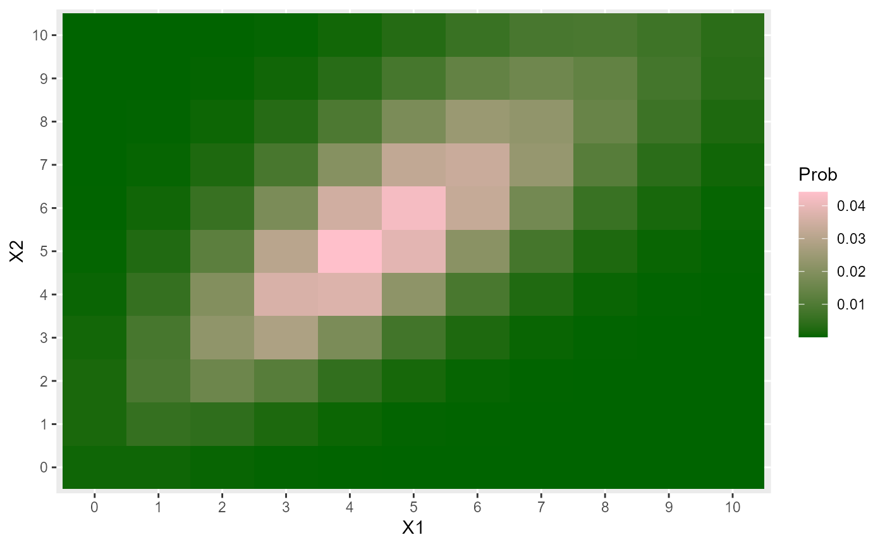

This function obtains the probability for the Bivariate Poisson distribution under the parameterization of Geoffroy et. al (2021).
dBP_Geoffroy(x, l1, l2, l0, log = FALSE)
rBP_Geoffroy(n, l1, l2, l0)vector or matrix of quantiles. When x is a matrix,
each row is taken to be a quantile and columns correspond to the number of dimensions p.
mean for \(Z_1\) variable with Poisson distribution.
mean for \(Z_2\) variable with Poisson distribution.
mean for \(U\) variable with Poisson distribution.
logical; if TRUE, densities d are given as log(d).
number of random observations.
Returns the density for a given data x.
Kouakou, K. J. G., Hili, O., & Dupuy, J. F. (2021). Estimation in the zero-inflated bivariate Poisson model with an application to health-care utilization data. Afrika Statistika, 16(2), 2767-2788.
# Example 1 ---------------------------------------------------------------
# Probability for single values of X1 and X2
dBP_Geoffroy(c(0, 0), l1=3, l2=4, l0=1)
#> [1] 0.0003354626
dBP_Geoffroy(c(1, 0), l1=3, l2=4, l0=1)
#> [1] 0.001006388
dBP_Geoffroy(c(0, 1), l1=3, l2=4, l0=1)
#> [1] 0.001341851
# Probability for a matrix the values of X1 and X2
x <- matrix(c(0, 0,
1, 0,
0, 1), ncol=2, byrow=TRUE)
x
#> [,1] [,2]
#> [1,] 0 0
#> [2,] 1 0
#> [3,] 0 1
dBP_Geoffroy(x=x, l1=3, l2=4, l0=1)
#> [1] 0.0003354626 0.0010063879 0.0013418505
# Checking if the probabilities sum 1
val_x1 <- val_x2 <- 0:50
space <- expand.grid(val_x1, val_x2)
space <- as.matrix(space)
l1 <- 3
l2 <- 4
l0 <- 5
probs <- dBP_Geoffroy(x=space, l1=l1, l2=l2, l0=l0)
sum(probs)
#> [1] 1
# Example 2 ---------------------------------------------------------------
# Heat map for a BP_Geoffroy
l1 <- 1
l2 <- 2
l0 <- 4
X1 <- 0:10
X2 <- 0:10
data <- expand.grid(X1=X1, X2=X2)
data$Prob <- dBP_Geoffroy(x=data, l1=l1, l2=l2, l0=l0)
data$X1 <- factor(data$X1)
data$X2 <- factor(data$X2)
library(ggplot2)
ggplot(data, aes(X1, X2, fill=Prob)) +
geom_tile() +
scale_fill_gradient(low="darkgreen", high="pink")

# Example 3 ---------------------------------------------------------------
# Generating random values and moment estimations
l1 <- 1
l2 <- 2
l0 <- 4
x <- rBP_Geoffroy(n=500, l1, l2, l0)
moments_estim_BP_Geoffroy(x)
#> l1_hat l2_hat l0_hat
#> 1.453739 2.361739 3.522261
# Example 4 ---------------------------------------------------------------
# Estimating the parameters using the loglik function
# Loglik function
llBP_Geoffroy <- function(param, x) {
l1 <- param[1] # param: is the parameter vector
l2 <- param[2]
l0 <- param[3]
sum(dBP_Geoffroy(x=x, l1=l1, l2=l2, l0=l0, log=TRUE))
}
# The known parameters
l1 <- 1
l2 <- 2
l0 <- 4
set.seed(12345)
x <- rBP_Geoffroy(n=500, l1=l1, l2=l2, l0=l0)
# To obtain reasonable values for l0
start_param <- moments_estim_BP_Geoffroy(x)
start_param
#> l1_hat l2_hat l0_hat
#> 0.7746052 1.6526052 4.4573948
# Estimating parameters
res1 <- optim(fn = llBP_Geoffroy,
par = start_param,
lower = c(0.001, 0.001, 0.001),
upper = c( Inf, Inf, Inf),
method = "L-BFGS-B",
control = list(maxit=100000, fnscale=-1),
x=x)
res1
#> $par
#> l1_hat l2_hat l0_hat
#> 0.8505074 1.7285063 4.3814917
#>
#> $value
#> [1] -2043.163
#>
#> $counts
#> function gradient
#> 9 9
#>
#> $convergence
#> [1] 0
#>
#> $message
#> [1] "CONVERGENCE: REL_REDUCTION_OF_F <= FACTR*EPSMCH"
#>